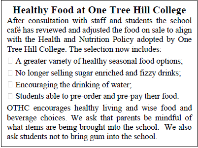
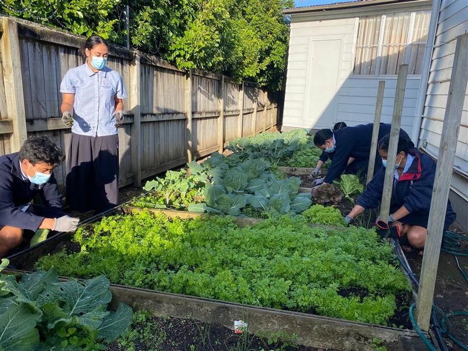
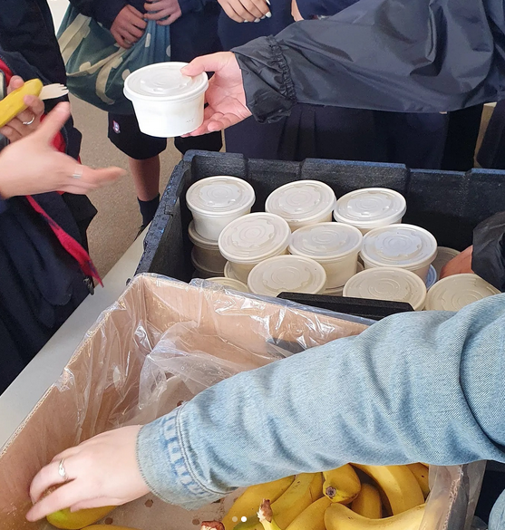
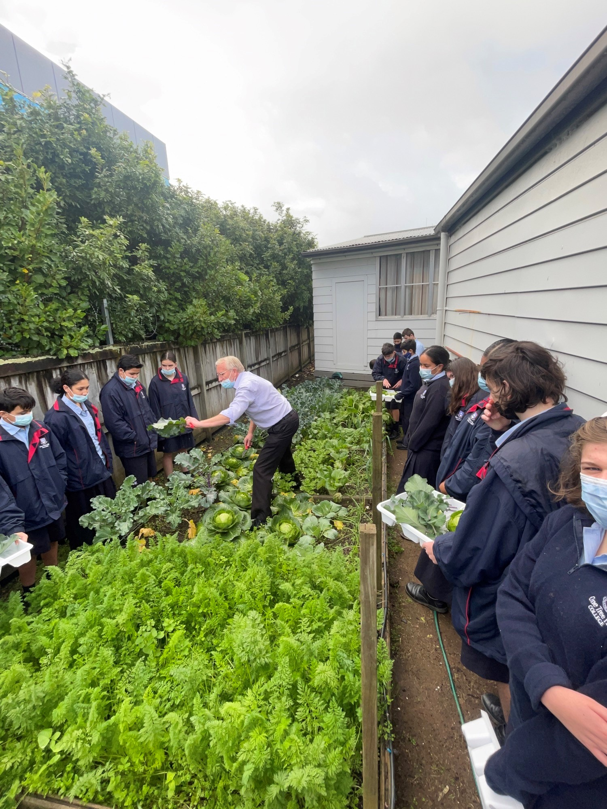
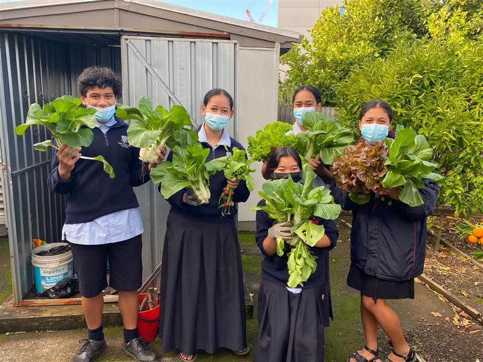
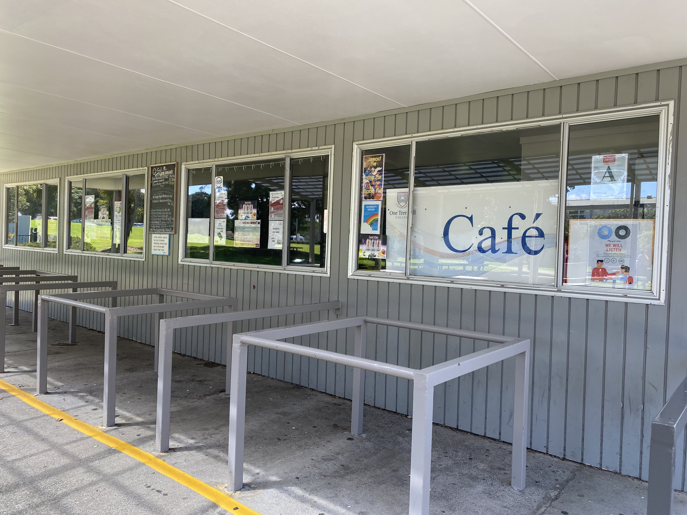

The OTHC Cafe Photo Gallery and Information
The banning of Unhealthy Nourishments
During the progressions of years at One Tree Hill College, our school recently had made a massive change when it came to our dietry needs. The school had made the choice to ban all unhealthy varieties of foods that was being served within our school cafe, this was due to our school encouraging the OTHC community to live in a healthy lifestyle, consuming nourishments that were beneficial to our human bodies, helping us on a day to day basis. With the ban, the school had removed a selection of things like potato chips, fizzy drinks and a variety of main course foods. Which then filled those empty spots with much healthier options.

The Start of the Healthy School Program
Then came to a new school system being created which had consisted of providing free healthy school lunches throughout the entire day from morning tea to lunchtime, which goes on everyday. By implementing this new system, it benefits all the staff and students to eat more healthy nourishments, instead of eating very unhealthy consumables that will further on increase the chances of very severe health conditions that can kill you. OTHC went ahead and teamed up with multiple food organisations to provide us the ingriedients and recipes to make these healthy lunches for the entire OTHC Community, as each day will be a different meal and will cycle onwards, and even having enough meals made which can be served until the end of a school day.

OTHC's Contribution
After the implenmentation of the healthy school lunches program, OTHC's students had made the effort to help with the program by making a school garden to harvest many different vegetables that will be used in the making of these healthy school lunches, providing us more with healthy contents within the foods being served, planting enough to be served for the entire OTHC Community during morning teas and lunch times. Making a big contribution to help within the cause.
The Complete Photo Gallery
- 
- 
- 

- 